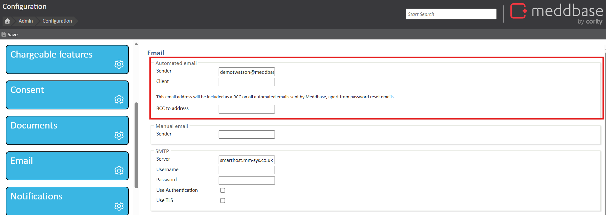
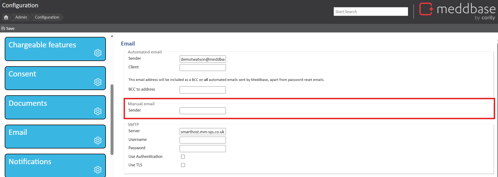

Meddbase allows changing various setting influencing the way emails work in your system. One of the options is sending manual and/or automated emails from a custom email address.
Changing email settings in the application can have significant business implications and should be done carefully.
Click here for an article describing the email configuration section in Meddbase.
There will be a need for your internal IT Team to get involved, therefore, before setting custom email addresses, please read the following guidance on setting up SPF (Sender Policy Framework) to allow Meddbase servers. This guide describes the following:
What is SPF?
SPF, or Sender Policy Framework, is a system which is built into every email server which helps to combat malicious emails being sent on behalf of a domain. Essentially it is a list of authorised servers which are allowed to send email on behalf of your domain. If an email is sent from a server which is not on this list, this can result in email going into the receiver’s junk or spam folder.
How do I set up SPF to allow Meddbase servers?
This is typically a task which will be performed by your IT team, or whoever manages your website or email server. If you already have an SPF record, you will need to add “_spf.meddbase.com” to the allowed list. If you do not currently have an SPF record, you should create one which includes our servers, for example:
v=spf1 mx include:mail.yourdomain.com include:_spf.meddbase.com ~all
In the above example, “mail.yourdomain.com” would be replaced with your server information and also worth note that use of “~all” is only regarded as a soft-fail, so you may change this based on your own security requirements. For more information on SPF please see: http://www.open-spf.org/.
Setting a sender for manual emails means that any patient responses will be delivered to the inbox of the specified sender email address, rather than to the Meddbase inbox of the user who sent the email.
If you wish to set custom sender email addresses, you may need to also perform some additional configuration on your domain's SPF records to ensure emails do not end up in the receiver’s junk folder.
Automated emails include appointment confirmations, reminder emails and patient portal notifications. By default, the sender address is set to noreply@meddbase.com. To change this:

Manual emails are emails sent directly to a patient from Meddbase. By default, the sender address is set to [yourusername]@meddbase.co.uk. To change this:
Changing this will change the sender address for all staff.
